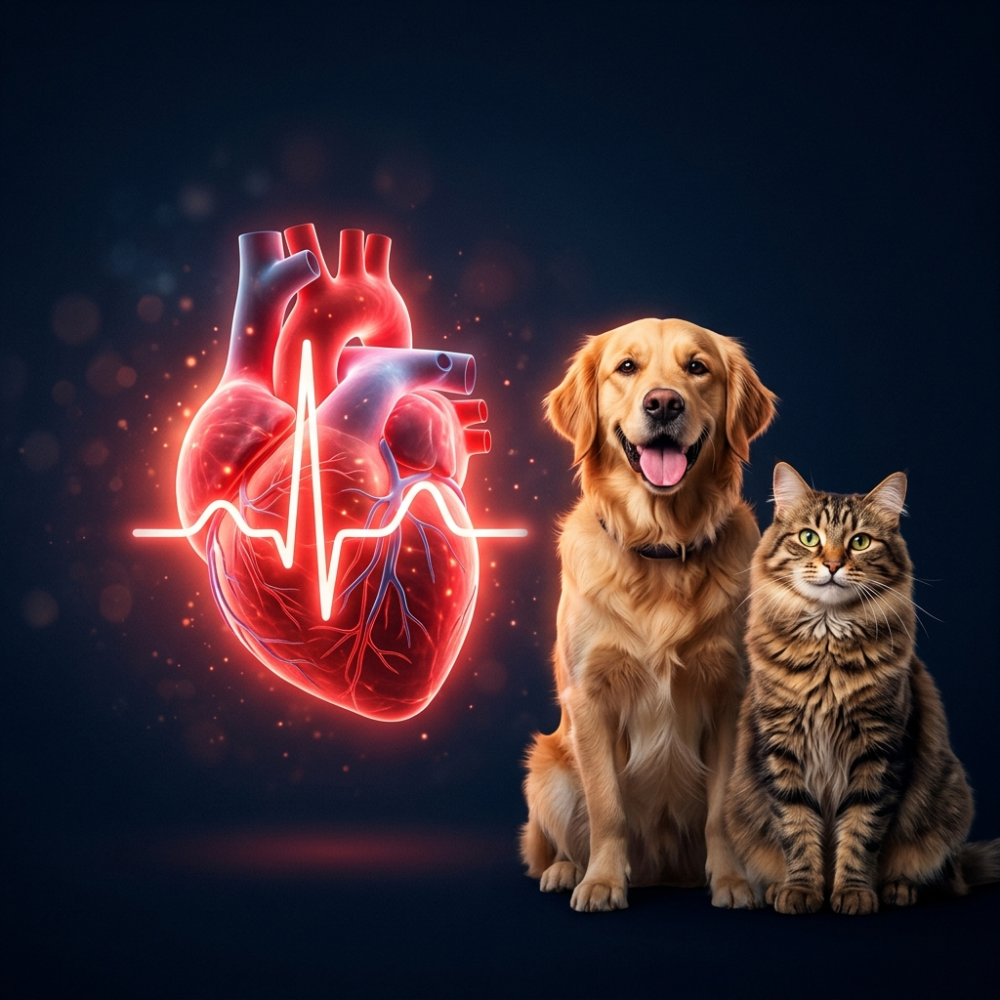
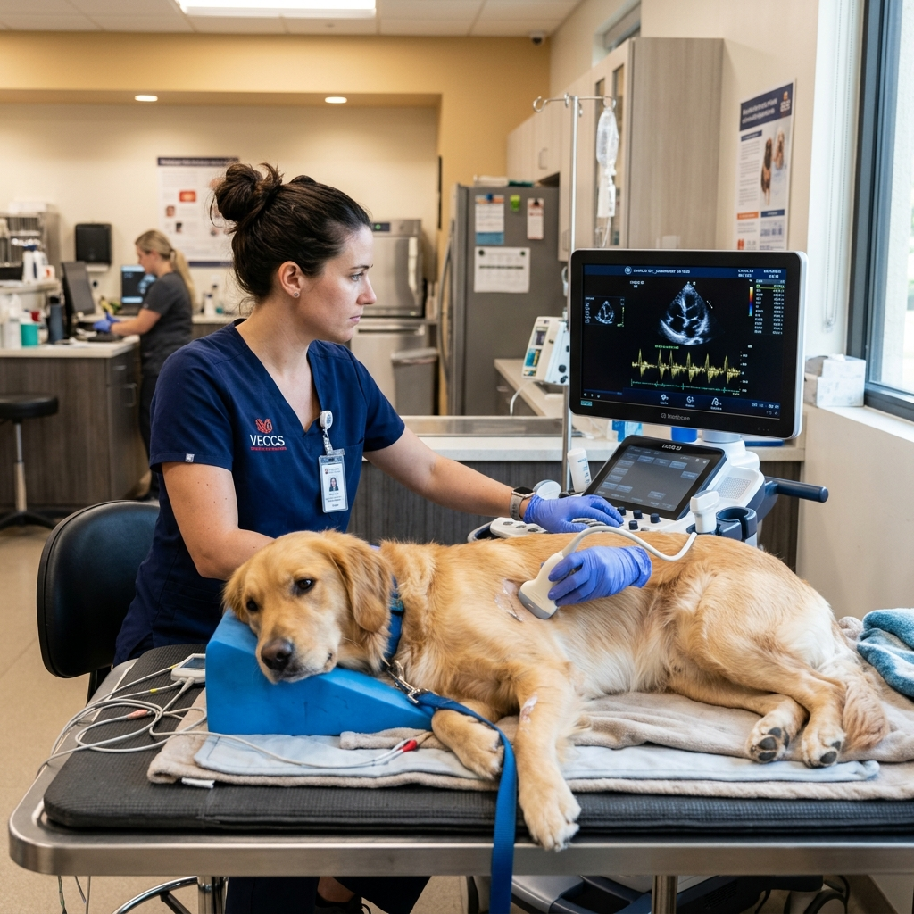

CardiologÃa Veterinaria
CardiologÃa veterinaria a domicilio y para clÃnicas. Cardiólogo veterinario en casa con ecocardiografÃa Doppler veterinaria y electrocardiograma veterinario. Precisión diagnóstica en cada latido.
Diagnóstico preciso y tecnologÃa avanzada en cardiologÃa veterinaria para mejorar la calidad de vida de tu mascota. Atención especializada en Bogotá y asesorÃa en toda Colombia.

Entiendo que recibir un diagnóstico cardÃaco para tu mascota puede ser abrumador. Como Médico Veterinario especializado en CardiologÃa, mi misión es brindarte claridad, tranquilidad y el tratamiento más avanzado en Colombia.
Con años de experiencia y equipos de vanguardia, trabajamos juntos para que tu compañero de vida siga latiendo fuerte a tu lado.
Ofrecemos una atención cardiológica y general completa para la salud y bienestar de tu mejor amigo, directo en tu hogar o clÃnica.
CardiologÃa veterinaria a domicilio y para clÃnicas. Cardiólogo veterinario en casa con ecocardiografÃa Doppler veterinaria y electrocardiograma veterinario. Precisión diagnóstica en cada latido.
Médico veterinario a domicilio en Bogotá. Consulta veterinaria para perros y gatos, vacunación veterinaria en casa y desparasitación para perros y gatos con altos estándares de calidad.
Laboratorio veterinario a domicilio, toma de muestras en casa (incluyendo toma de muestras de sangre veterinaria) y protocolos de hospitalización veterinaria en casa.
ImagenologÃa veterinaria y ecografÃa veterinaria a domicilio. También proveemos servicios veterinarios para colegas apoyando a otras clÃnicas en sus diagnósticos especializados.

Estamos aquà para cuidar lo más importante: su corazón y su bienestar. Atención garantizada en Bogotá.
Infórmate con nuestros recursos especializados sobre salud animal en Colombia.

Descubre por qué los desmayos son la alerta principal de arritmias y cómo el monitoreo de 24 horas puede salvar su vida en Colombia.
Leer ArtÃculo
La ceguera repentina y el daño renal y cardÃaco están ligados a la presión arterial alta en gatos geriátricos.
Leer ArtÃculo
Conoce por qué los exámenes de sangre no son suficientes antes de someter a tu mascota a anestesia general.
Leer ArtÃculoLa confianza de las familias que nos eligen en toda Colombia es nuestro mayor logro.
"Llegamos asustados porque a Toby le detectaron un soplo. El Dr. Daniel fue increÃblemente empático. Le hizo el ecocardiograma y nos explicó todo con paciencia. Toby ahora está en tratamiento y volvió a ser el perrito juguetón de siempre."
"Nuestra gata Luna empezó a respirar muy rápido. Fuimos por urgencia y gracias al diagnóstico rápido y certero de la clÃnica, lograron estabilizarla. Las instalaciones son de primer nivel y la calidad humana es excepcional. ¡100% recomendados!"
No es estrictamente obligatorio, pero es ideal. Si tienes una remisión, trabajaremos en conjunto con tu veterinario de cabecera en Bogotá o cualquier parte de Colombia enviándole el informe detallado.
Absolutamente no. Es un procedimiento de ultrasonido no invasivo, indoloro y seguro. Tu mascota estará relajada y en compañÃa tuya durante todo el examen.